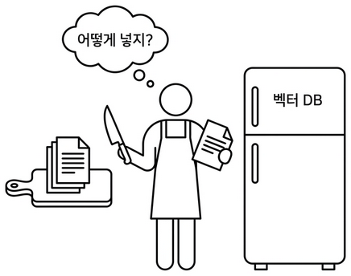
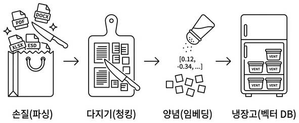
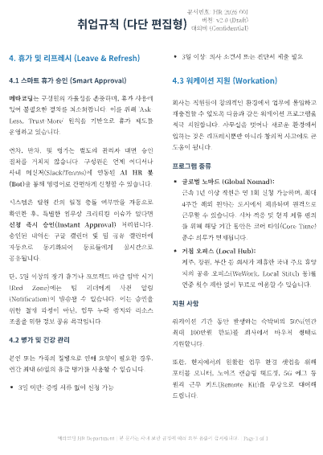
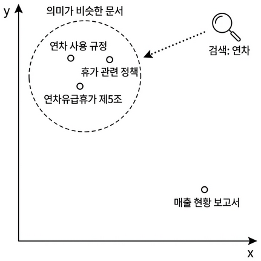
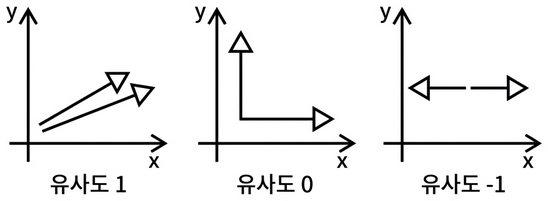
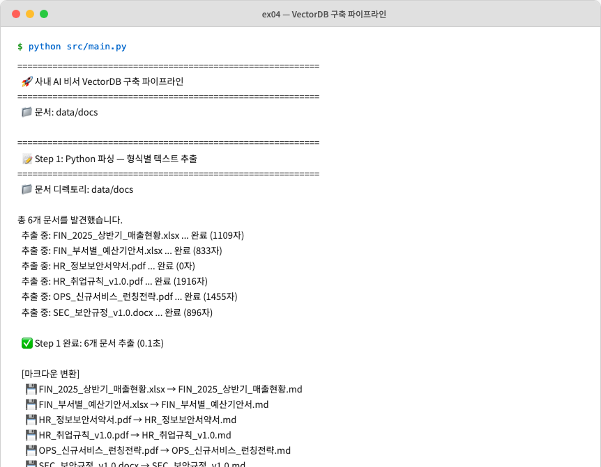
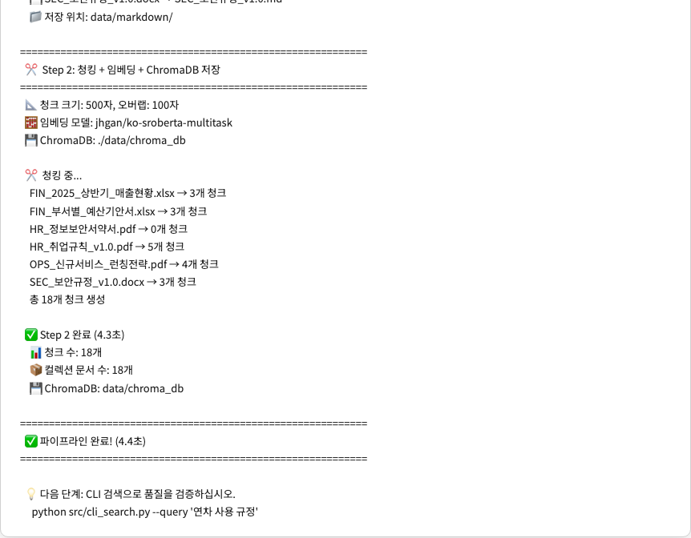
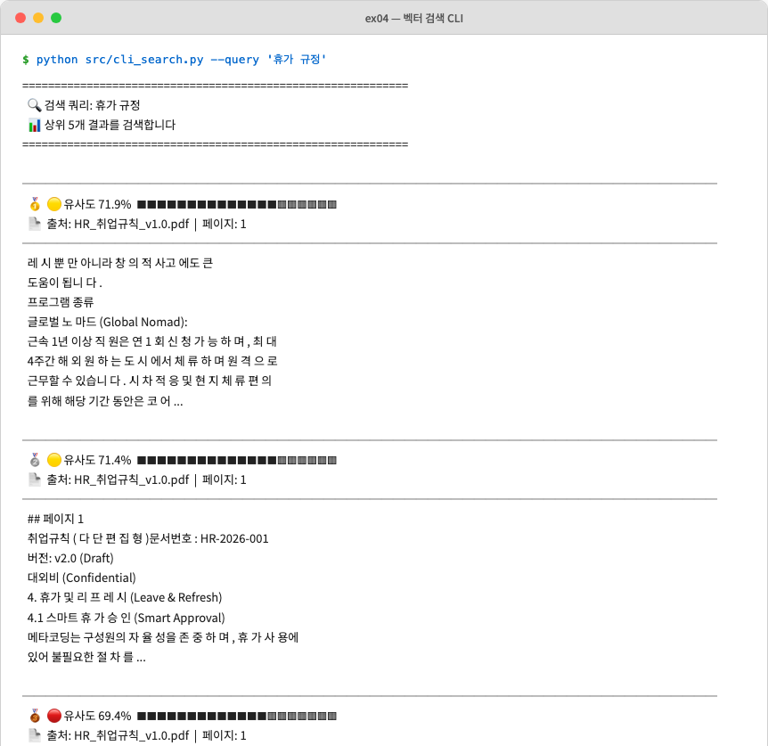
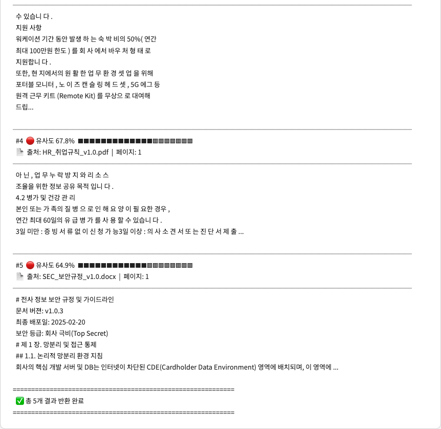

이번 챕터가 끝나면
준비하기. 실습 시작 전 한 번만 설정
파일 구조는 다음과 같습니다.
임베딩 모델은 첫 실행 시 약 400MB 다운로드
ko-sroberta-multitask는 최초 실행 시 HuggingFace에서 자동 다운로드됩니다. 이후부터는 로컬 캐시를 사용하므로 한 번만 받아두면 됩니다.
| 패키지 | 역할 |
|---|---|
pypdf |
PDF 텍스트 추출 (페이지별) |
python-docx |
DOCX 단락·표 추출 |
openpyxl |
XLSX 셀 데이터 추출 |
sentence-transformers |
ko-sroberta 임베딩 모델 로딩·실행 |
chromadb |
벡터 DB (로컬 영속 저장소) |
python src/main.py --step 1. 파싱 결과만 먼저 확인 (Markdown)data/markdown/ 폴더 열어 변환 결과 눈으로 검증python src/main.py. 전체 파이프라인 (파싱 → 청킹 → 임베딩 → 저장)python src/cli_search.py --query "휴가 규정". 검색 동작 확인
화요일 오전 10시. 사무실 창으로 햇살이 길게 들어오고, 모니터에는 어제 정리한 폴더 트리가 그대로 떠 있었습니다. 키보드에 얹은 손끝에 가벼운 온기가 돌았습니다.
data/docs/hr/HR_취업규칙_v1.0.pdf … 6개 파일명이 단정하게 줄 맞춰져 있습니다. 옆자리 동료가 의자를 드르륵 돌렸습니다. 어제 인사팀에 한 번 혼나고 온 그 동료입니다.
잘 나와야지.
챕터 3에서 머릿속에 그려둔 규칙(Markdown 통일, 폴더 메타데이터, 500자에 100자 오버랩)을 이제 코드로 옮길 차례입니다. 손질하고, 다지고, 양념하고, 냉장고에 정리하면 6개 문서가 검색 가능한 지식이 됩니다.
마트에서 사 온 재료를 봉지째 냉장고에 던지면 어떻게 될까요? 나중에 찾을 수 없습니다. 양파가 어디 있는지, 고기가 아직 쓸 만한지 다 뒤져야 압니다. 제대로 하려면 네 단계를 거칩니다.
사내 문서도 같습니다.
| 주방 | 문서 처리 | 무슨 일 |
|---|---|---|
| 손질 | 파싱 (Parsing) | PDF·DOCX·XLSX에서 텍스트를 꺼내 Markdown으로 통일 |
| 다지기 | 청킹 (Chunking) | Markdown을 500자 조각으로 자름 (100자 오버랩) |
| 양념 | 임베딩 (Embedding) | 조각을 768차원 숫자 벡터로 변환 |
| 냉장고 | 벡터 DB 저장 | 벡터를 ChromaDB에 넣어 유사도 검색 가능하게 |

호기심에 HR_취업규칙_v1.0.pdf를 파이썬으로 그냥 open() 해봤습니다. 화면에 쏟아진 건 %PDF-1.6\n%âãÏÓ… 로 시작하는 뜻 모를 문자열이었습니다.
아, 그냥 열면 안 되는구나.

첫 단계는 손질입니다. 사람 눈에는 "제1조 제1항"이 보이지만 컴퓨터에겐 PDF 파일이 그냥 바이너리입니다. 텍스트를 꺼내려면 파서(Parser) 가 필요합니다. 형식마다 쓰는 도구가 다릅니다.
| 형식 | 파서 | 특징 |
|---|---|---|
pypdf |
텍스트 기반 PDF에서 페이지별 추출. 이미지 PDF는 챕터 10에서 OCR·Vision으로 처리 | |
| DOCX | python-docx |
단락(Paragraph)과 표(Table) 추출, 제목을 Markdown으로 변환 |
| XLSX | openpyxl |
시트별 셀 데이터를 행 단위로 읽음 |
확장자 한 글자가 어떤 함수를 부를지 결정합니다.
ex04/src/extractor.py의 통합 함수가 확장자를 보고 파서를 자동 선택합니다. 이 함수는 이미 구현된 상태이고 우리는 ex04/src/main.py에서 호출만 합니다.
extractor의 전략 패턴. ex04/src/extractor.py의 extract_text() 함수는 {".pdf": extract_from_pdf, ".docx": extract_from_docx, ".xlsx": extract_from_xlsx} 같은 딕셔너리 매핑으로 파서를 고릅니다. 새 형식을 추가할 때 딕셔너리에 한 줄만 추가하면 되는 구조입니다.
욕심 같아선 python src/main.py 한 번에 전체 파이프라인을 돌리고 싶지만, 파싱 결과부터 따로 확인하는 게 안전합니다. 챕터 3에서 본 Garbage In, Garbage Out 원칙이 여기서 적용됩니다. 입력이 깨지면 뒤에서 아무리 청킹과 임베딩을 잘해도 복구되지 않습니다.
그래서 ex04/src/main.py는 4단계를 두 Step으로 묶어 쪼개 뒀습니다.
| 단계 | 함수 | 하는 일 | 실행 옵션 |
|---|---|---|---|
| Step 1 | step1_python_parsing() |
손질(파싱) → 결과를 data/markdown/에 저장 |
--step 1 |
| Step 2 | step2_embed_and_store() |
다지기(청킹) → 양념(임베딩) → 냉장고(ChromaDB 저장) | --step 2 (없으면 1, 2 모두) |
Step 1을 먼저 돌려 data/markdown/ 결과물을 눈으로 검증하고, 괜찮으면 Step 2로 넘어갑니다. --step 인자를 빼면 전체가 순서대로 실행됩니다. 이 섹션(4.3)에서는 Step 1을, 다음 섹션(4.4)에서 Step 2를 채웁니다.
ex04/src/main.py를 열고 step1_python_parsing 안의 TODO부터 채웁니다.
extract_all_from_directory() 는 ex04/src/extractor.py에 이미 구현돼 있고 save_results_as_markdown() 은 _pipeline_utils.py의 헬퍼입니다. 우리가 하는 일은 둘을 순서대로 호출하는 것뿐입니다. 이어서 main() 끝부분에 --step 인자 분기 TODO가 있는데, 여기에 step1_python_parsing을 연결합니다.
이제 파싱만 돌려 보겠습니다.
--step 1은 파싱과 Markdown 변환만 수행합니다. 끝나면 data/markdown/에 변환 결과가 생깁니다. HR_취업규칙_v1.0.md를 열어 확인합니다.
파일 정보가 상단에 요약돼 있고 ## 페이지 1 단위로 텍스트가 잘 추출됐습니다.
이번엔 XLSX 결과를 확인합니다. data/markdown/FIN_부서별_예산기안서.md를 열면 시트가 Markdown 표 형식(| 열1 | 열2 |)으로 변환돼 있습니다.
표 모양이 살짝 삐뚤해 보여도 벡터 DB 입장에서는 원본 엑셀보다 훨씬 이해하기 쉬운 형태입니다. 헤더 행과 구분선(---)이 있고 파이프(|) 기호로 행, 열 관계가 텍스트 흐름에 담겨 있어, "경영지원본부 예산"을 검색하면 표의 해당 데이터가 정확히 잡힙니다.
파싱이 깨끗한 걸 확인했으면 나머지 세 단계를 한 번에 돌립니다.
취업규칙 전문을 한 덩어리로 넣으면 챕터 1에서 겪은 바로 그 문제가 반복됩니다. 관련 없는 내용까지 딸려옵니다. 챕터 3에서 설계한 대로 고정 크기 500자 + 100자 오버랩으로 자릅니다. 청크가 어떻게 잘리고 어떻게 겹치는지는 챕터 3.6 오버랩 도식에서 이미 눈으로 봤으니, 여기서는 구현만 짚습니다.
ex04/src/chunker.py를 열고 split_text_into_chunks() 함수 안의 TODO를 채웁니다.
DEFAULT_CHUNK_SIZE(500), DEFAULT_OVERLAP(100)은 chunker.py 상단에 선언된 모듈 상수입니다. main.py에서 --chunk-size로 넘겨 덮어쓸 수 있습니다.
step = chunk_size - overlap 이 핵심입니다. 500자를 자르지만 다음 청크는 400자 뒤에서 시작하므로 결과적으로 100자가 겹칩니다. while 루프가 텍스트 끝까지 반복하며 청크 리스트를 쌓아 올립니다.
각 조각에는 메타데이터도 함께 붙습니다. 출처 파일명, 페이지, 분류. 챕터 3에서 설계한 라벨이 여기서 쓰이고, 나중에 에이전트가 "이 답변의 출처는 취업규칙 3페이지입니다"라고 당당하게 말할 수 있게 됩니다.
컴퓨터는 글자를 모릅니다. 숫자만 연산합니다. 임베딩(Embedding) 은 텍스트의 의미를 숫자 벡터(768개 숫자 리스트)로 바꾸는 과정입니다. 핵심은 의미가 비슷한 텍스트는 비슷한 숫자가 된다는 점입니다.

"숫자가 비슷하다"는 걸 어떻게 판단할까요? 벡터를 좌표 위의 화살표라고 생각하시면 됩니다. 두 화살표가 같은 방향이면 의미가 비슷하고, 반대면 다릅니다. 코사인 유사도(Cosine Similarity) 가 이 각도를 측정합니다.

임베딩 모델은 여럿 있지만 이 책은 ko-sroberta-multitask를 씁니다. 한국어 문장 유사도에 파인튜닝돼 있고("연차"와 "휴가"가 가깝다는 걸 잘 잡습니다), 로컬 실행이라 API 비용이 없고, 사내 민감 정보를 외부로 보내지 않아도 됩니다.
챕터 8에서 다른 모델과 비교
챕터 8에서 ko-sroberta와 다른 임베딩 모델의 검색 품질을 비교 실험합니다. 지금은 기본값으로 시작하고, 더 나은 선택지가 있는지는 챕터 8에서 확인합니다.
양념까지 끝난 재료를 ChromaDB에 정리합니다. 챕터 1에서 Chroma.from_documents() 한 줄로 썼지만, 이번에는 ex04/src/store.py가 직접 넣습니다.
ChromaDB란? 텍스트 의미를 담은 벡터(768차원 숫자 배열)를 저장하고, 주어진 질문 벡터와 가장 가까운 벡터를 빠르게 찾아 주는 벡터 데이터베이스입니다. 일반 관계형 DB(PostgreSQL, MySQL)가 "이름이 홍길동인 행"처럼 정확한 값을 조회한다면, 벡터 DB는 "이 질문과 의미가 비슷한 문서 Top-K"를 조회합니다. 로컬에 파일로 영속 저장이 가능해 서버 재시작 후에도 데이터가 남아 있고, Python 한 줄로 띄울 수 있을 정도로 가볍습니다. 실무에서는 Pinecone, Weaviate, Milvus 같은 유료, 대규모용 옵션도 쓰지만, 이 책처럼 로컬 실습, 소규모 운영에는 ChromaDB가 표준에 가깝습니다.
| 저장 항목 | 내용 | 예시 |
|---|---|---|
id |
청크 고유 ID | hr_취업규칙_v1_0_text_p001_c0003 |
document |
청크 텍스트 원문 | "제5조 연차유급휴가는..." |
embedding |
768차원 벡터 | [0.12, -0.34, ...] |
metadata |
출처 정보 | {file_name: "HR_취업규칙_v1.0.pdf", page: 3} |
저장은 upsert. 같은 ID가 있으면 덮어쓰고 없으면 새로 추가합니다. 파이프라인을 여러 번 실행해도 중복이 쌓이지 않습니다. 챕터 3에서 설계한 전체 재인덱싱 전략과 정확히 맞닿습니다.
ex04/src/store.py에는 _store_utils.py에서 import해 쓰는 모듈 상수 3개가 함수 시그니처 기본값으로 등장합니다. CLI 옵션으로 덮어쓸 수 있습니다.
| 상수 | 기본값 | 역할 |
|---|---|---|
DEFAULT_CHROMA_DIR |
./data/chroma_db |
ChromaDB가 벡터를 저장할 로컬 디렉토리. 서버가 재시작돼도 데이터 유지 |
DEFAULT_COLLECTION_NAME |
metacoding_documents |
컬렉션 이름(일반 DB의 "테이블" 같은 개념). 프로젝트별로 다르게 쓰면 여러 벡터DB를 한 디렉토리에 공존 가능 |
DEFAULT_EMBEDDING_MODEL |
jhgan/ko-sroberta-multitask |
텍스트를 768차원 벡터로 변환할 임베딩 모델(HuggingFace ID). 검색 시에도 같은 모델을 써야 의미가 맞음 |
ex04/src/store.py를 열고 store_chunks_to_chroma() 함수 안의 TODO를 4단계 순서대로 구현합니다.
_store_utils.py의 헬퍼 함수 세 개가 코드에 쓰였습니다. 직접 구현하진 않지만 역할은 알아 두세요.
| 함수 | 역할 |
|---|---|
load_embedding_model(name) |
HuggingFace에서 ko-sroberta-multitask 모델을 로드해 SentenceTransformer 객체를 반환. 최초 1회만 다운로드, 이후 캐시 |
get_or_create_collection(client, name) |
ChromaDB 컬렉션을 가져오거나 없으면 생성. 유사도 계산 방식을 cosine으로 지정 |
embed_chunks(chunks, model) |
청크 리스트를 (ids, documents, embeddings, metadatas) 네 리스트로 분해. 문서 텍스트를 배치 단위로 768차원 벡터로 변환 |
우리가 할 일은 이 세 함수를 순서대로 호출하는 것뿐입니다.
2단계에서 chromadb.PersistentClient(path=chroma_dir)가 벡터DB를 여는 부분입니다. 챕터 1에서는 Chroma.from_documents() 한 줄이 메모리에 임시 저장소를 만들고 프로그램이 끝나면 사라졌어요. 사내 실서비스에선 매번 문서를 다시 임베딩하는 건 낭비라서, 이번엔 디스크에 파일로 영속 저장합니다. path에 적은 폴더(data/chroma_db/)에 벡터가 파일로 쌓이고, 프로그램을 껐다 켜도 그대로 남아 있습니다. Settings(anonymized_telemetry=False)는 ChromaDB가 기본으로 켜 둔 익명 사용 통계 수집을 끄는 옵션. 사내 문서를 다루는 실습에선 꺼 두는 편이 안전합니다.
chromadb.Client vs chromadb.PersistentClient. 같은 ChromaDB지만 여는 방식이 다릅니다. Client()는 프로세스 메모리에만 존재하는 임시 저장소(프로그램 종료 시 휘발)고, PersistentClient(path=...)는 지정 디렉토리에 SQLite + Parquet 파일로 저장해 재시작 후에도 유지됩니다. 대규모 운영에선 Pinecone, Weaviate처럼 서버를 별도로 띄우지만, 로컬 실습이나 소규모 사내 시스템에는 PersistentClient만으로 충분합니다.
3단계에서 embed_chunks()가 청크를 768차원 벡터로 일괄 변환하고, 4단계 collection.upsert()가 이를 BATCH_SIZE(기본값 64)씩 끊어 저장합니다. upsert는 같은 ID가 있으면 덮어쓰는 연산이라, 파이프라인을 여러 번 돌려도 중복이 쌓이지 않습니다. 메모리가 부족하면 BATCH_SIZE를 32로 줄이고, 여유가 있고 임베딩이 느리면 128로 늘릴 수 있습니다.
ex04/src/main.py의 step2_embed_and_store 함수에 청킹, 임베딩, 저장을 조합하는 TODO가 있습니다. 앞에서 파싱이 돌려둔 결과(python_results)를 받아 두 함수를 순서대로 호출합니다.
마지막으로 main() 의 --step 2 분기 TODO를 채워 step2와 연결합니다. (--step 2만 골라 돌리면 파싱이 없으므로 내부에서 step1을 다시 부릅니다.)
이제 전체 파이프라인을 한 번에 돌립니다.
명령 한 줄로 파싱부터 저장까지 어떤 순서로 흘러가는지 한눈에 보면 다음과 같습니다.
main() → parse_arguments() → steps_to_run = [1, 2]
extract_all_from_directory(docs_dir)save_results_as_markdown(results)chunk_all_documents(results, 500, 100)store_chunks_to_chroma(chunks, ...)
load_embedding_model() → ko-sroberta 로드 →
PersistentClient(path=data/chroma_db/) → DB 열기 →
embed_chunks(chunks, model) → 768차원 벡터 변환 →
collection.upsert(...) → 배치 단위 저장


파이프라인이 돌았으면 검색이 되는지 확인합니다. 검색 로직은 ex04/src/store.py의 search_chroma() 함수에 있고, TODO가 한 군데 있습니다. 파일을 열고 빈 자리를 채웁니다.
저장과 똑같은 임베딩 모델을 써야 합니다. 질문 벡터와 저장된 청크 벡터가 같은 공간에서 비교되어야 거리가 의미를 갖기 때문입니다. 검색 결과는 {rank, text, distance, metadata} 형태의 리스트로 정리돼 돌아옵니다.
cli_search.py는 _search_utils.py의 format_distance_as_similarity() 헬퍼를 써서 ChromaDB 거리(0~2)를 백분율 유사도(0~100%)로 바꿔 출력합니다. 거리가 0에 가까울수록 유사도는 100%에 가까워집니다.


1~3위가 모두 취업규칙 휴가 관련 내용입니다. 키워드가 정확히 일치하지 않아도 의미가 가까우면 찾아냅니다.
옆자리 동료가 화면을 슬쩍 들여다봤습니다.
웃음이 한 번 새어 나왔습니다. 그러나 화면을 다시 보니 1위 유사도가 71% 였습니다. --top-k 5로 늘려 보니 4, 5위에 결이 다른 청크가 섞여 있었습니다.
아직 완벽하지는 않다.
벡터 DB는 "그나마 가까운 순서"로 k개를 무조건 채웁니다. 그래서 검색 개수를 늘리면 관련 없는 문서가 억지로 딸려옵니다. 검색 품질을 본격적으로 끌어올리는 작업은 챕터 8에서 다룹니다. 지금은 "휴가 규정"에 취업규칙이 1위로 잡히는 것까지가 이번 챕터의 도착선입니다.
검색 결과는 PC, 모델 버전에 따라 조금 다를 수 있습니다
임베딩 모델 버전이나 실행 환경에 따라 순서, 유사도 수치가 책과 달라질 수 있습니다. 최상위(Top 1~3)에 취업규칙의 휴가, 연차 관련 내용이 잡히면 정상입니다.
왜 Markdown으로 변환할까요? 임베딩 모델은 훈련 데이터에 Markdown이 많이 포함돼 있어 # 제목, | 표 |, - 목록 같은 구조를 잘 이해합니다. PDF 바이너리를 그대로 넣는 것보다 Markdown 텍스트가 검색 품질이 좋습니다. 그리고 data/markdown/의 결과물을 사람이 눈으로 검증할 수 있다는 이점도 있습니다.
이미지 기반 PDF의 한계. 예제 파일 중 HR_정보보안서약서.pdf는 스캔한 이미지로만 구성돼 있어 pypdf가 텍스트를 뽑지 못합니다. extractor.py의 PDF 파서는 이런 파일에서 빈 문자열을 돌려주고, 결국 청크가 0개로 나옵니다. 이미지 기반 PDF는 OCR이나 Vision LLM이 필요한데, 이 문제는 챕터 10에서 해결합니다.
extractor.py의 전략 패턴. 파일 확장자에 따라 파서를 자동으로 고르는 구조는 딕셔너리 매핑 한 줄로 끝납니다.
새 형식(예: HWP)을 추가하려면 이 딕셔너리에 한 줄 추가하고 해당 파서 함수만 구현하면 됩니다. if/elif로 분기하는 것보다 확장이 쉽고, 파서끼리 결합도도 낮습니다.
청킹 · 임베딩 옵션 한눈에. 자주 손보는 값들입니다.
| 상수 | 기본값 | 언제 바꾸나 |
|---|---|---|
chunk_size |
500자 | 규정처럼 짧은 조항은 300자, 긴 보고서는 800자까지 실험 |
overlap |
100자 | chunk_size의 20% 전후가 무난. 경계에서 잘려도 되는 문서면 0으로 |
BATCH_SIZE |
64 | 메모리 부족하면 32, 여유 있으면 128 |
top_k (검색) |
5 | 정확도만 본다면 3, 리랭커 입력 후보군 만들려면 10+ |
오프라인 파이프라인의 본체를 완성했습니다. 챕터 3 규칙 → Doc Pipeline → ChromaDB. 이제 이 저장소를 챕터 5에서 실시간 검색 엔진으로 연결합니다.
| 본문 속 표현 | 진짜 용어 | 정식 정의 |
|---|---|---|
| "손질" | 파싱 (Parsing) | PDF·DOCX·XLSX에서 순수 텍스트를 추출하는 과정 |
| "다지기" | 청킹 (Chunking) | 긴 텍스트를 벡터 DB에 적합한 크기로 분할. 고정 500자 + 오버랩 100자 |
| "양념" | 임베딩 (Embedding) | 텍스트 의미를 768차원 숫자 벡터로 변환 |
| "냉장고" | 벡터 DB (Vector Database) | 벡터를 저장하고 유사한 벡터를 빠르게 검색하는 특수 DB |
| "의미 유사도" | 코사인 유사도 (Cosine Similarity) | 두 벡터 사이 각도로 유사도를 측정. 1에 가까울수록 유사 |
| "덮어쓰기" | 업서트 (Upsert) | 같은 ID가 있으면 업데이트, 없으면 삽입하는 연산 |
이것만은 기억하자
data/markdown/의 결과를 반드시 검증합니다.